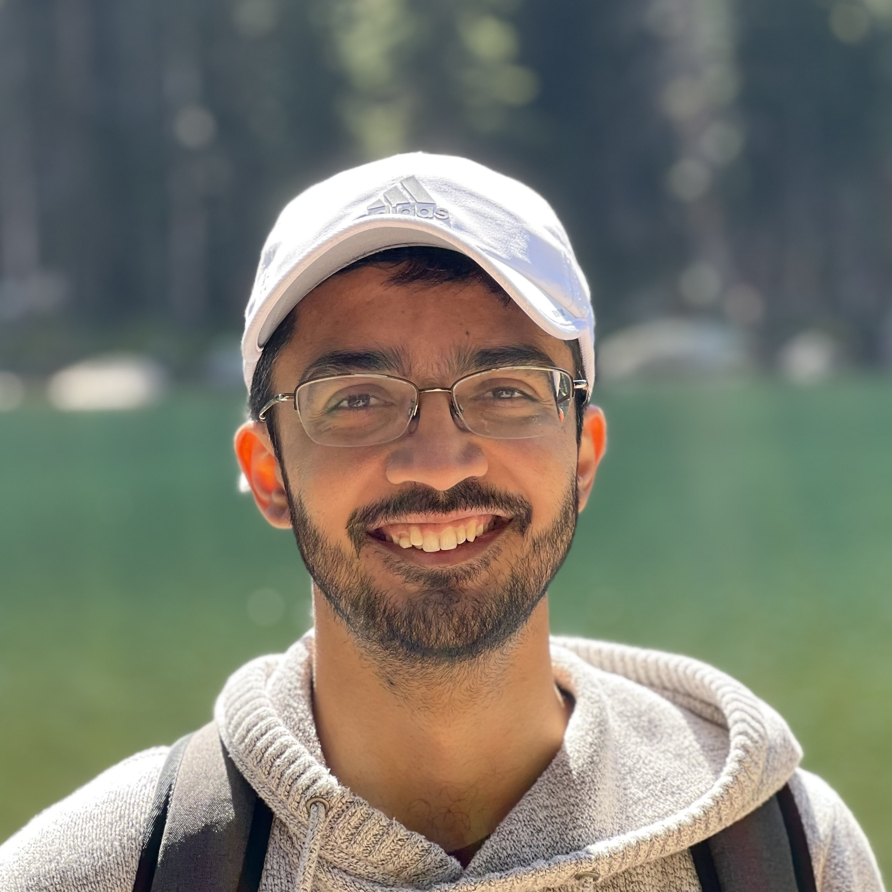

Siddharth Patki
Research Scientist, Meta
Menlo Park, CA
Email: spatki (at) meta.com
Resume | Google Scholar | LinkedIn | Github
About
I am a Research Scientist on the GenAI team at Meta, working with Ning Zhang on developing multimodal Llama models. Prior to this, I was a Postdoctoral Researcher in the Embodied AI group at Meta where I worked with Akshara Rai and Roozbeh Mottaghi on building foundation models for agentic systems. Prior to my role at Meta, I briefly worked as an Applied Scientist in the Robotics AI division at Amazon. I got my PhD in Electrical Engineering from the University of Rochester in August 2023 where I was advised by Prof. Thomas Howard. My PhD research involved developing efficient models of language understanding and perception for enabling robots that can follow natural language instructions in heavily cluttered and dynamic spaces. I was a Hajim School of Engineering Dean's Fellow, and a Scholar at the Rochester CoE in Data Science. Along with doing research, I enjoy doing watercolor painting and playing Badminton.
Updates
- Oct 07, 2024 : Started as Research Scientist on the GenAI team at Meta.
- Jun 17, 2024 : Organized workshop on Object-Centric Representations for Robotics at CVPR 2024!
- Aug 17, 2023 : Defended my PhD!
- Apr 24, 2023 : Started as an Postdoctoral Researcher in the Embodied AI group at FAIR Meta.
- Oct 17, 2022 : Started as Applied Scientist in the Robotics AI division at Amazon.
- Jul 28, 2021 : Defended my thesis proposal. Planning for 2023 graduation.
- Jun 1, 2017 : Started PhD program at the University of Rochester.
- Mar 27, 2017 : Awarded Dean's Fellowship for outstanding academic record and strong potential for graduate study.
- Mar 10, 2016 : Nominated as Scholar at the New York State Center of Excellence in Data Science.